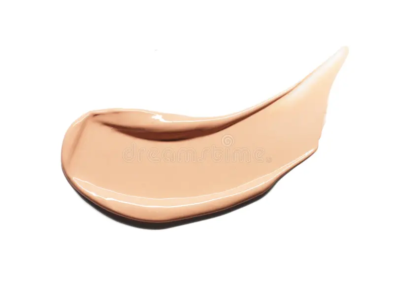
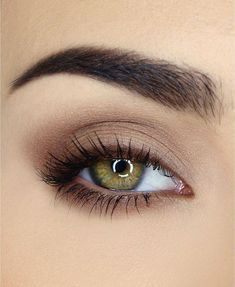

Variedades y especificaciones de cada producto
Fórmulas para Cobertura de RostroLas bases actuales varían según las necesidades de cada tipo de piel. Las pieles grasas optan por acabados mate y fórmulas libres de aceites que controlan el brillo, mientras que las pieles secas se benefician de bases e iluminadores fluidos con ingredientes activos como el ácido hialurónico para un efecto luminoso. Pigmentación y Durabilidad en OjosLas sombras para párpados han evolucionado de simples polvos de colores a fórmulas de alta fidelidad que incluyen acabados satinados, metálicos y mates cremosos. El uso de fijadores especiales permite que los pigmentos se mantengan intactos por más de doce horas continuas sin perder intensidad. |
  |